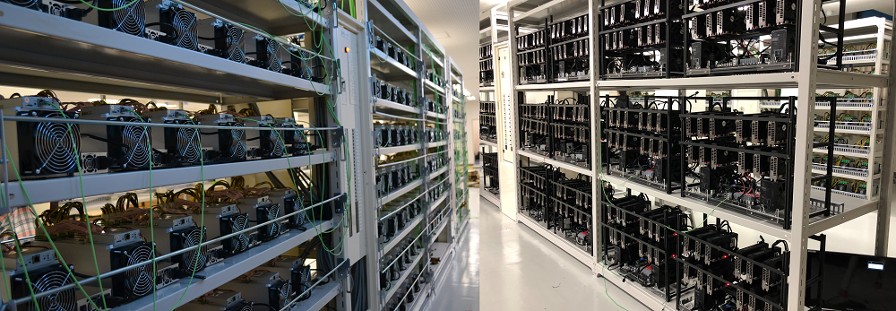

بیتکوین و زنجیرهٔ بلاکی
جلسهٔ نجف آباد ۹۷۰۱۱۷
بانک چگونه کار میکند
سرویس دهندهٔ مرکزی
شبکهٔ مرکزی و متمرکز
بازکردن حساب و شمارهٔ حساب
انجام تراکنشها
اجرای نگهداری حسابها به صورت دستی
تعدادی فرد دور هم در حال بررسی دادوستدها و نوشتن یکایک آنها هستند تا حساب همه چیز را نگهداری کنند.
چگونه در کامپیوترها و شبکه میتوان چنین پخش کردن اطلاعات را داشت؟
شبکهٔ نظیر به نظیر
آنچه بیشتر از شبکه شنیدهایم حالت متمرکز آن است یعنی چیزی بیشتر به صورت سرویس دهنده و سرویس گیرنده یا کارگزار و مشتری.
در واقع نوعهای دیگری از شبکه نیز وجود دارد که بستر کنونی اینترنت برای آنها بهتر است.

شبکهٔ نظیر به نظیر بدون ساختار

برای نمونه در پروندههای تورنت شما به چنین چیزهایی برخورد کردهاید که به جای گرفتن یک پرونده از یک سرویس دهندهٔ خاص آن را از جاهای گوناگونی میگیرد.

نظیرهای وصل شده به یکی از تورنتها در نرمافزار بیتتورنت

الگوریتم سیلگونه Flooding
https://en.wikipedia.org/wiki/Flooding_(computer_networking)
Flooding algorithm with ACK messages Flooding is a simple computer network routing algorithm in which every incoming packet is sent through every outgoing link except the one it arrived on.
Flooding is used in bridging and in systems such as Usenet and peer-to-peer file sharing and as part of some routing protocols, including OSPF, DVMRP, and those used in ad-hoc wireless networks (WANETs).

شبکهٔ بیتکوین
نمودار اتصالات شبکه و در کنار آن نظیرها
سندهای الکترونیکی
تغییرات در سندهای الکترونیکی به نظر بسیار سادهتر است بنابراین در نگاه نخست به کارگیری کامیپوترها به شکلی که به هم اعتماد کنند بسیار دشوارتر میشوند.
در حالت متمرکز به مرکز اصلی اعتماد میکنیم.
اعتماد به صورت غیرمتمرکز چگونه انجام شود؟
عدم تمرکز
زنجیرهٔ بلاکی غیرقابل تغییر است نمیتوان رکوردهای پیشین را تغییر داد.
جابجایی پول بدون این که بتوان آن را عوض کرد یا برگرداند. نمیتوان به جایی برگزداند و اگر پولی فرستاده شده دیگر نمیتواند برگردد
کمبودها
بیتکوین فقط امکان پردازش ۴ تراکنش را در ثانیه دارد که بسیار نسبت به سامانههای دیگر متمرکز کمتر است.
اتریوم ۱۵ تراکنش در ثانیه
افزایش قیمت تراکنش
ویژگیهای فنی بیتکوین
- یک شبکهٔ غیرمتمرکز نظیر به نظیر
- یک بانک کامل همهٔ تراکنشها (زنجیرهٔ بلاکی)
- مجموعهٔ قانونهایی برای تأیید اعتبار مستقل هر کدام از گرهها
- روندی برای رسیدن به یک تواقق همگانی غیرمتمرکز برای تأیید بلاکها و افزودن آنها به زنجیرهٔ بلاکی (pow)
هنگام گرفتن شمارهٔ بیتکوین نیازی به ثبت نام در جایی نیست و بدون اتصال به شبکه نیز میتوانید یک شماره برای خودتان داشته باشید. این شماره با کلید اصلی شمارهٔ حسابش ارتباط دارد.
یک حساب بیتکوین و تراکنشهایش در چند جستجو کنندهٔ بلاکها
آلیس از جو بیتکوین میخرد سپس آلیس با بخشی از آن پول یک قهوه از باب میخرد و باب نیز آن پول را جای دیگری خرج میکند.

روش یکم پرداخت که اغلب انجام میشود.

روش دوم پرداخت

روش سوم پرداخت

curl https://blockchain.info/unspent?active=1Cdid9KFAaatwczBwBttQcwXYCpvK8h7FK
بررسی یکی از تراکنشها
درهمسازی یا «هَش»
میتوان از هر سندی hash گرفت. در کنار برخی برنامههایی که از اینترنت میگیرید بویژه پروندههای لوح فشرده پروندههای کوچکی وجود دارد که با نام md5 یا sha1 دیده میشوند و میتوانید اینها را بررسی کنید. برای اطمینان از این است که پروندهای که گرفتهاید درست از اینترنت گرفته شده است.
اجرای عملی تبدیل کردن آن به یک هش
$ cat test_sha256sum.txt This is a test $ sha256sum test_sha256sum.txt 9d63c3b5b7623d1fa3dc7fd1547313b9546c6d0fbbb6773a420613b7a17995c8 test_sha256sum.txt $ cat test_sha256sum.txt This is a test. $ sha256sum test_sha256sum.txt 11586d2eb43b73e539caa3d158c883336c0e2c904b309c0c5ffe2c9b83d562a1 test_sha256sum.txt
هنگام بارگیری برخی از پروندههای بزرگ مانند پروندههای سیستم عاملهای رایگانی مانند اوبونتو یک پروندههای کوچکی نیز دیده میشود.
در زیر محتوای درون پروندهٔ SHA256SUMS نشان داده شده است. همان گونه که میبینید شبیه همان عددهایی است که در بالا از روی پروندهٔ کوچک test_sha256sum.txt ساخته شده است.
بنابراین برای بررسی کردن این که آیا پرونده به درستی از سرویس دهنده بارگیری شده است یا خیر میتوان درهمسازی شدهٔ همان پرونده را به کمک روش گفته شده در بالا به دست آورد سپس با مقدار داده شده از وبگاه مقایسه نمود تا مطمئن شویم درست گرفته شده است یا خیر
ویژگیهای تابع درهمسازی
- با دادن پیام یکسان به تابع درهمسازی همواره یک مقدار به دست میآید.
- محاسبهٔ مقدار درهمسازی شده از یک پیام باید سریع انجام شود.
- نباید بتوان از مقدار درهمسازی شده، پیام اصلی را به دست آورد مگر این که همهٔ پیامهای ممکن را آزمایش کزد.
- تغییر کوچکی در پیام باید مقدار درهمسازی شدهٔ متفاوتی را ایجاد کند.
- نباید بتوان دو پیام را یافت که مقدار درهمسازی شدهٔ یکسانی داشته باشند.
توضیح این که hash چیست
هدف این است که تراکنش شما نیز به این تراکنشها افزوده شود و امکان تغییر آن در آینده وجود نداشته باشد اکنون یک بخش ساده را دیدید که نشان میدهد چگونه درهم سازی باعث میشود بتوان اطلاعات به نسبت یکتایی را از یک سند الکترونیکی به دست آورد که تغییر دادن سند اصلی این امضای آن را (همان درهمسازی شدهٔ آن را) تغییر میدهد.
درخت «مرکل»
رمزنگاری
نیاز به رمزگذاری در طول تاریخ و رمزگشانی
الگوریتمهای گوناگون رمزگذاری
سادهترین حالت داشتن یک کلید است که کل پیام را با آن رمزنگاری کرد. پیام را فرستاد و گیرنده نیز همان کلید را داشته باشد و پیام رمزنگاری شده را با همان کلید رمزگشایی کند.
کلید عمومی و خصوصی
تولید کلید عمومی و خصوصی

رمزنگاری با کلید عمومی و خصوصی
شکل یکم

شکل دوم
امضای دیجیتال اسناد

چند کاربرد دیگر
یکی از کاربردهای آن
نشانی بیتکوین یا شمارهٔ کیفپول

نرمافزار بیتکوین
یک گرهٔ کامل یا Full Node

حالتهای گوناگون

بخشی از شبکهٔ بیتکوین با انواع گرهها
double spending
استخراج کنندهها
اقتصادی
به جای اعتماد به بانکها و مؤسسات مالی برای نگهداشتن پول و جابجا کردن آن و ایجاد تراکنشها سیستمی که بتواند چنین کاری را انجام دهد. اعتماد کردن به بانک که حتما کار خودش را درست انجام میدهد.
خرید بیتکوین
https://meetup.com/ https://localbitcoins.com/
دیگر پولهایی که هم اکنون وجود دارد و مراجع رسمی در حال فروش آن هستند مانند وبمانی